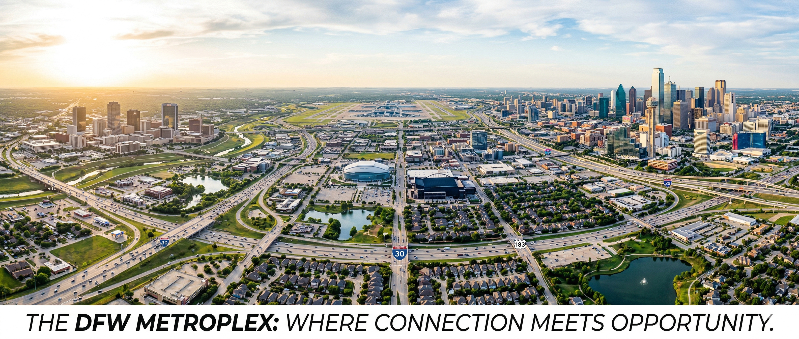

White Paper | March 2026
Trinity Air Link
Transportation System
America's First Integrated eVTOL–Autonomous Vehicle Mobility Hub
A comprehensive analysis of the market opportunity, technical architecture, calculated financial projections, regulatory pathway, and investment case for transforming the historic Texas & Pacific Warehouse in downtown Fort Worth, Texas into a capital-light multi-modal eVTOL and autonomous vehicle transportation hub.
24.8%Calculated IRR
Before Terminal
$89.7MNPV @ 10%
Before Terminal
36.8%IRR With
Terminal
$133MYear 5 Revenue
Policy Context — March 9, 2026: The U.S. Department of Transportation and FAA announced 8 selections for the White House eVTOL Integration Pilot Program (eIPP). Texas DOT, with Archer Aviation as its industry partner, is one of the 8. Named routes connect Dallas, Austin, San Antonio, and Houston. Archer Midnight air taxi operations begin in Texas H2 2026. Fort Worth — Texas's second million-plus city — is not yet on the route map. The Trinity Air Link is the infrastructure project that puts it there.
Section 1
Executive Overview
The Trinity Air Link Transportation System proposes the adaptive reuse of the historic Texas & Pacific Warehouse in downtown Fort Worth into the nation's first fully integrated multi-modal mobility hub — combining electric vertical takeoff and landing (eVTOL) aircraft, Level 4 autonomous electric vehicles, a 120,000 square foot technology innovation center, and AI-powered systems management into a single, seamlessly connected infrastructure platform.
The preferred model is capital-light and operator-neutral. Certified eVTOL and autonomous vehicle operators carry vehicle acquisition, pilots, maintenance, insurance, and fleet financing while Trinity Air Link controls the infrastructure, charging, dispatch, passenger-processing, data, and service-standard layer.
This is not a speculative concept. The technologies that power the Link are commercially operational today. Waymo delivers 450,000+ paid autonomous rides per week across multiple U.S. cities including Austin, Texas, with Dallas beginning service in 2026. Archer Aviation holds FAA Part 135 Air Carrier, Part 145 Repair Station, and Part 141 Pilot Training certificates and begins Texas air taxi operations under the federal eIPP program in H2 2026. Joby Aviation completed FAA Stage 4 of 5 type certification in November 2025.
$107M–$113MCapital-Light CasePreferred base case
24.8%Calculated IRR10-year, before terminal value
$89.7MNPV@ 10% before terminal value
36.8%IRR With TerminalIncludes $480M exit/refi value
Economic Impact
- 2,500+ construction jobs
- 800+ permanent positions
- $25M+ annual tax revenue (Year 5)
- $500M+ regional economic multiplier
Investment Returns
- $133.4M revenue by Year 5 (moderate)
- $44.9M EBITDA and 34% EBITDA margin at Year 5 moderate case
- 24.8% calculated 10-year project IRR before terminal value
- $89.7M NPV @ 10% before terminal value

The Dallas–Fort Worth Metroplex — 8.5 million residents, $710B+ economy, and the nation's fastest-growing major metro.
Section 2The Problem: DFW's Transportation Crisis
The Dallas-Fort Worth metroplex is simultaneously one of America's greatest economic success stories and one of its most acute transportation failures. It is the third-largest metro economy in the United States, generating more than $710 billion in annual GDP. It is also the 4th largest metro by population at 8.5 million residents, growing faster than any comparable U.S. city — approximately 487 people per day.
That growth is strangling itself.
174MDelay Hours AnnuallyUp 8% year-over-year
69 hrsLost Per Commuter/Year$1,618 cost per driver
10thWorst U.S. CommuteForbes ranking, 2025
$36.4BCongestion Cost by 2050Without intervention
44 of the 100 most congested roads in Texas are in the DFW metroplex. Less than 1% of workers use public transit; approximately 70% drive alone. Highway expansion has proven ineffective — new lane capacity induces new demand within five to seven years, restoring congestion to prior levels. The problem requires a new dimension: altitude.
Section 3The Inflection Point: eVTOL and AV Arrive Simultaneously
Electric Vertical Takeoff and Landing Aircraft
Archer Aviation — Texas eIPP Partner
- FAA Part 135, 145, and 141 certificates held
- Midnight aircraft: 4 pax + pilot, 150 mph, 60-mile range
- Texas eIPP partner — commercial ops H2 2026
- Fare: ~$3–11/mile; turns 90-min drive into 15-min flight
- Revenue operations allowed under eIPP before full type cert
Joby Aviation — FAA Stage 4 of 5
- Stage 4 Type Inspection Authorization (Nov 2025)
- S4: 4 pax + pilot, 200 mph, 100-mile range, 65 dB
- Targeting first U.S. commercial passenger flights in 2026
- Toyota invested $1B+; also Texas eIPP participant
- FAA certification harmonization with 4 nations by Jan 2027
Industry Note — Lilium declared insolvency November 2024 after burning $1.8 billion. This validates the Link's platform-agnostic design — infrastructure serves multiple operators, eliminating single-manufacturer dependency risk.
Autonomous Ground Vehicles — Level 4 Commercial Today
| Company | Status | Texas Presence | Key Metric |
|---|
| Waymo | Commercial Level 4 | Austin + Dallas, TX (expanding) | 450K+ paid rides/week |
| Beta Technologies | CX300 certified | Expanding | 600+ unit backlog |
| Wisk Aero (Boeing) | Stage 2 complete | — | Autonomous (no pilot) |
| GM Cruise | Suspended ops | — | Pivoting strategy |
Waymo's safety record across 25.3 million autonomous miles: 88% fewer property damage claims and 92% fewer injury claims vs. human drivers (Swiss Re study). Waymo's expanding Texas footprint — operating commercially in Austin with Dallas service beginning in 2026 — establishes a clear and active regional pathway directly into the DFW market.
Section 7Market Analysis
Total Addressable Market
$4.6BUAM Market (2024)MarketsandMarkets
$29BUAM Market (2030)Grand View Research
$41B+UAM Market (2035)MarketsandMarkets
31–34%Annual Growth RateConsensus 2024–2030
DFW Serviceable Market
- 8.5M residents — 4th largest U.S. metroplex
- $710B+ GDP — 3rd largest U.S. metro economy
- 487 people/day net population growth
- 600,000 jobs created in DFW over the prior 5 years
- American Airlines, AT&T, Toyota NA, Southwest Airlines HQ
- Aerospace & Defense: Bell Textron, Lockheed Martin, L3Harris Technologies, Raytheon/RTX, BAE Systems, Northrop Grumman — major DFW employers and natural eVTOL ecosystem partners
Target Customer Segments
- Business travelers: Primary revenue driver; $75–$150/trip
- Airport connectivity: DFW/Love Field to downtown <12 min vs. 40–50 min by car
- Innovation center tenants: Stable real estate revenue independent of adoption curve
- Cargo & delivery: Phase 4 expansion revenue stream
Section 10Financial Model
Revenue Projections — Year 5 (2030)
| Revenue Stream | Conservative | Moderate | Optimistic |
|---|
| Air Mobility Platform Revenue | $21.9M | $54.8M | $131.4M |
| Ground Mobility Platform Revenue | $16.4M | $54.8M | $137.3M |
| Innovation Center / Real Estate | $2.4M | $3.8M | $5.1M |
| Technology Licensing & IP | $4.0M | $10.0M | $16.0M |
| Ancillary (retail, cargo, parking) | $6.0M | $10.0M | $16.0M |
| Total Revenue | $50.7M | $133.4M | $305.8M |
Assumptions include pad access fees, stand/use fees, passenger facility charges, terminal fees, charging/energy markup, dispatch/scheduling software fees, data/traffic management fees, maintenance bay/hangar access fees, and revenue share per passenger or trip. Third-party operators fund vehicles in the preferred access model; Trinity Air Link funds infrastructure, software, charging, safety systems, and terminal operations.
Capital-Light EBITDA — Year 5
| Scenario | Revenue | OpEx | EBITDA |
|---|
| Conservative | $50.7M | ($59.0M) | ($8.3M) |
| Moderate | $133.4M | ($88.5M) | $44.9M |
| Optimistic | $305.8M | ($138.0M) | $167.8M |
Key Return Metrics
| Metric | Value |
|---|
| Calculated project IRR before terminal value | 24.8% |
| Calculated NPV @ 10% before terminal value | $89.7M |
| Moderate Year 10 terminal value | $480M |
| IRR including terminal value | 36.8% |
| NPV @ 10% including terminal value | $293.2M |
| Break-even target | Year 5 (2030) |
Calculated Return Summary
| Scenario | IRR Before Terminal | NPV @ 10% Before Terminal | Terminal Value | IRR With Terminal | NPV With Terminal |
|---|
| Capital-Light Conservative | 5.0% | ($23.9M) | $210M | 18.3% | $65.2M |
| Capital-Light Moderate / Base | 24.8% | $89.7M | $480M | 36.8% | $293.2M |
| Capital-Light Optimistic | 55.7% | $440.3M | $1.0B | 62.8% | $864.4M |
| Owned-Fleet Low-Demand Stress | (17.2%) | ($139.6M) | $175M | 2.3% | ($65.4M) |
10-Year Capital-Light Project Cash Flow — Moderate Base Case Before Terminal Value
| Year | Development Phase | Net Project Cash Flow | Notes |
|---|
| 2026 | Phase 1 | ($25M) | Planning, regulatory, team, early operating burn |
| 2027 | Phase 2 | ($55M) | Infrastructure development and operating burn |
| 2028 | Phase 3 | ($17M) | Capital-light technology systems, charging, dispatch, operator access infrastructure |
| 2029 | Phase 4 | ($2M) | Launch year with major revenue ramp |
| 2030 | Year 5 | $40M | Breakeven / positive annual cash-flow target |
| 2031 | Stabilization | $50M | Operator agreements mature |
| 2032 | Stabilization | $55M | Route expansion and higher utilization |
| 2033 | Stabilization | $60M | Platform revenue growth |
| 2034 | Stabilization | $65M | Mature multi-operator network |
| 2035 | Stabilization / Exit | $70M | Final projected annual cash flow before terminal value |
The preferred capital-light moderate case produces a calculated 24.8% 10-year project IRR before terminal value and $89.7M NPV at a 10% discount rate before terminal value. Terminal value is presented separately as exit/refinance upside and is not counted as Year 5 operating cash flow.
Terminal Value / Exit Upside
| Case | Year 10 EBITDA | Exit Multiple | Terminal Value |
|---|
| Conservative | $35M | 6.0x | $210M |
| Moderate | $60M | 8.0x | $480M |
| Optimistic | $100M | 10.0x | $1.0B |
Section 11Funding Strategy
Capital Structure
| Source | Amount | Notes |
|---|
| Capital-Light Operator Access Case | $107M–$113M | Preferred base case; operators carry vehicle capex |
| Hybrid Case | $115M–$121M | Limited seed/demo vehicles |
| Owned-Fleet Case | $129M | Upside/control case; higher fleet exposure |
| Phase 1 Funding Target | $20M | Planning, regulatory, design, team, partner MOUs |
Grant Opportunities — Competitive Programs
- USDOT ATTAIN program: $3M target
- FAA discretionary airport/innovation programs (as eligible): $2M planning target
- DOE Vehicle Technology Program: $1.5M
- Texas Economic Development Act: $2.5M
- Texas Enterprise Fund: $2M
- City of Fort Worth incentives: $2M
- Federal Historic Tax Credits: $10M+ potential
Section 12Risk Assessment
| Risk | Impact | Probability | Score | Key Mitigation |
|---|
| FAA approval delays | Major | 30% | 12 | eIPP enrollment; early FAA engagement; regulatory counsel |
| VTOL technology maturity | Major | 35% | 12 | Platform-agnostic; multi-operator design; lease flexibility |
| Fleet ownership & depreciation exposure | Moderate | 20% | 6 | Preferred operator-access model shifts vehicle capex and depreciation to certified/qualified operators |
| Direct maintenance & certification burden | Moderate | 20% | 6 | Operator access agreements place primary vehicle maintenance/certification obligations on operators while Trinity manages infrastructure and service standards |
| Construction cost overruns | Moderate | 60% | 12 | 15–20% contingency; fixed-price contracts; historic specialists |
| Market adoption rate | Major | 40% | 12 | Capital-light launch model; multi-stream revenue; owned-fleet stress case modeled separately |
| AV integration challenges | Moderate | 20% | 6 | Proven technology; Waymo Austin precedent |
| Safety incident | Critical | <5% | 5 | $200M+ insurance; comprehensive safety protocols |
Risk posture: The capital-light operator access model reduces direct fleet ownership risk, depreciation risk, maintenance risk, and certification exposure by assigning vehicle ownership and operations to certified or qualified operators.
Section 13Regulatory Pathway
Federal — FAA
- eIPP participation — vertiport designation for T&P Warehouse site
- Vertiport design per FAA Advisory Circular 150/5390-3
- UTM integration for low-altitude airspace coordination
- Section 106 review (gateway to 20% Historic Tax Credit)
State — TxDOT
Primary contact: Emily Lambert, AAM Planning & Integration — [email protected] | 512.921.2082
Director: Sergio Roman — [email protected] | 512.239.9284
- TxDOT Emerging Aviation Technology Section — established April 2025
- State-level eIPP program vertiport designation
- Curb management and right-of-way for AV terminal
Local — City of Fort Worth
- Zoning: MU-2 Mixed Use; VTOL-specific use authorization required
- Building permits and historic preservation compliance
- Historic and Cultural Landmarks Commission approval
- Municipal partnership agreement and PPP framework
Regulatory Timeline
- Q2 2026: TxDOT eIPP engagement; City MOU
- Q3 2026: FAA pre-application consultation; zoning filing
- Q1 2027: Section 106 review; construction permits
- Q3 2028: FAA commercial operations approval
- Q1 2029: Full commercial service authorization
Stakeholder Value Framework
Government & Public Sector
- $500M+ economic multiplier over 10 years
- 2,500 construction + 800 permanent jobs
- $25M+ annual tax revenue (Year 5)
- T&P Warehouse vacancy resolved after 27 years
- Fort Worth on national eIPP map alongside Dallas
- Zero direct municipal capital investment required
Community & Public
- 40–60% commute time reduction for TAL users
- 30% local traffic emissions reduction
- T&P Warehouse preserved for future generations
- 800+ jobs with local hiring priority
- Public innovation showcase and STEM programs
Investors & Financial Partners
- 24.8% calculated 10-year project IRR before terminal value
- $89.7M NPV @ 10% before terminal value
- 36.8% IRR and $293.2M NPV including illustrative $480M terminal value
- Capital-light base case shifts fleet capex to certified/qualified operators
- Scalable to 50+ U.S. metropolitan markets
Technology Partners
- Real-world deployment at operational scale
- Reference customer status for global marketing
- Joint R&D in a living transportation laboratory
- Market access: 8.5M DFW residents, $710B+ economy
Section 15Conclusion and Call to Action
"The T&P Warehouse has waited 27 years for a project worthy of it. It was built to move people, and it will move people again — at 150 miles per hour, silently, over the rooftops of a city growing faster than its roads can carry it."
The window opened on March 9, 2026. The federal government has declared Texas a national priority for eVTOL integration and selected it as one of only 8 sites nationwide. Archer Aviation begins commercial Texas air taxi operations this summer. Waymo operates commercially in Austin today, with Dallas service beginning in 2026.
What is missing is the infrastructure that ties it together in Fort Worth. The Link closes that gap with a capital-light platform model that does not require Trinity Air Link to own every vehicle in the network.
For Government Partners
A City of Fort Worth municipal partnership agreement and letter of support for eIPP vertiport designation — the first step costs nothing and positions the city decisively.
For Technology Partners
MOUs with eVTOL operators and AV providers executing in Q2 2026. If your organization is deploying in Texas, the Link is the Fort Worth anchor you need.
For Investors
Phase 1 financing of $20M is actively raising. The preferred capital-light model produces a calculated 24.8% 10-year project IRR before terminal value and $89.7M NPV @ 10% before terminal value in the moderate case.
For the Community
The T&P Warehouse belongs to Fort Worth. This project is built to serve Fort Worth first — and to show the world what Fort Worth is capable of building.